The main impact of a 150 basis-point (1.50 percentage-point) rise in United States interest rates together with oil at $180 a barrel on Germany would be a large drop in GDP of 3.10% by Q17. Equities peak at -5.91% in Q16.
Demand and trade. Consumption peaks at -1.78 % vs baseline in Q18, from -0.59 in Q1 to -1.69 in Q20. Investment peaks at -8.97 % vs baseline in Q10, from -3.80 in Q1 to -7.33 in Q20. Net Exports peaks at -2.71 % vs baseline in Q4, from -1.67 in Q1 to -0.85 in Q20. Gov Spending peaks at +0.69 % vs baseline in Q17, from +0.27 in Q1 to +0.64 in Q20. Gov Debt peaks at +0.61 % vs baseline in Q20, from +0.02 in Q1 to +0.61 in Q20.
External / FX. The real exchange rate shows real depreciation (a weaker, more competitive home currency). Currency Strength peaks at +5.16 % vs baseline in Q4, from +3.14 in Q1 to +2.64 in Q20.
Labour. Employment peaks at -3.26 % vs baseline in Q20, from -0.24 in Q1 to -3.26 in Q20. Unemployment peaks at +2.27 pp in Q19, from +0.19 in Q1 to +2.26 in Q20. Real Wages peaks at -2.08 % vs baseline in Q20, from -0.01 in Q1 to -2.08 in Q20.
Prices. The three-year CPI impulse is +2.42 percentage points. CPI Inflation peaks at +0.59 pp in Q2, from +0.46 in Q1 to -0.20 in Q20. Domestic Infl. peaks at +0.41 pp in Q2, from +0.32 in Q1 to -0.14 in Q20. Marginal Cost peaks at -1.84 % vs baseline in Q17, from -0.72 in Q1 to -1.72 in Q20.
Financial conditions. Policy Rate peaks at +1.24 pp (annualized) in Q6, from +0.30 in Q1 to -0.37 in Q20. Govt 2Y Yield peaks at +1.07 pp (annualized) in Q3, from +0.97 in Q1 to -0.49 in Q20. Govt 5Y Yield peaks at +0.51 pp (annualized) in Q1, from +0.51 in Q1 to -0.51 in Q20. Govt 10Y Yield peaks at -0.41 pp (annualized) in Q18, from -0.00 in Q1 to -0.41 in Q20. Bond Price peaks at -8.68 % vs baseline in Q6, from -2.09 in Q1 to +2.60 in Q20. Equity Index peaks at -5.91 % vs baseline in Q16, from -2.52 in Q1 to -5.40 in Q20. Tobin's Q peaks at -6.28 % vs baseline in Q10, from -2.66 in Q1 to -5.13 in Q20. House Prices peaks at -4.22 % vs baseline in Q20, from -0.15 in Q1 to -4.22 in Q20. Bank Credit peaks at -1.07 % vs baseline in Q18, from -0.07 in Q1 to -1.05 in Q20. Credit Spread peaks at +0.01 pp in Q18, from +0.00 in Q1 to +0.01 in Q20.
Sectoral and capital. Manuf. GDP peaks at -4.33 % vs baseline in Q4, from -2.60 in Q1 to -2.52 in Q20. Services GDP peaks at -2.12 % vs baseline in Q17, from -0.84 in Q1 to -1.97 in Q20. Capital Stock peaks at -0.81 % vs baseline in Q20, from -0.02 in Q1 to -0.81 in Q20.
Timing. By Q20 GDP is still -2.89% from baseline.
These figures are model IRFs versus baseline, not forecasts.
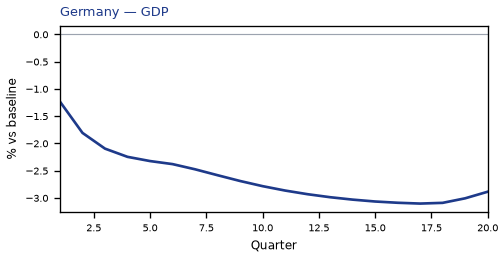
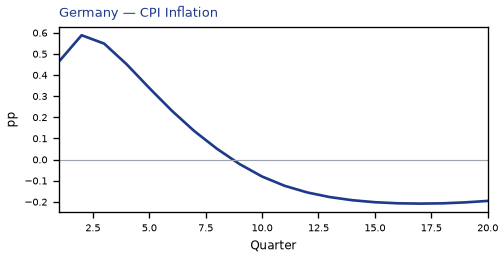
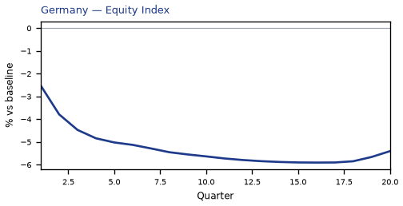
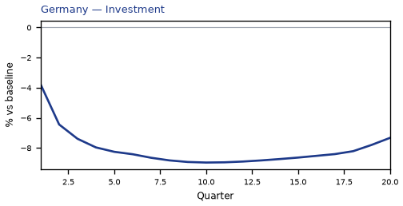
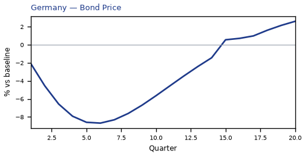
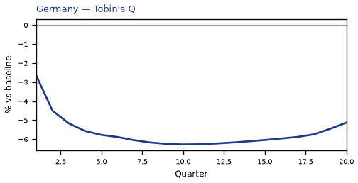
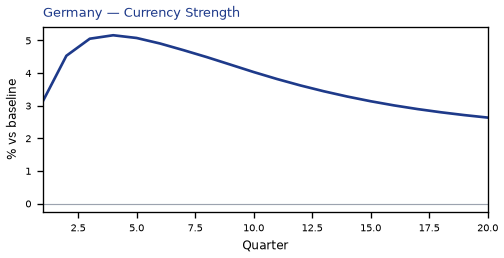
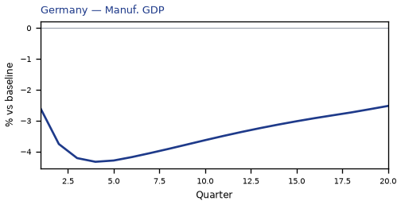
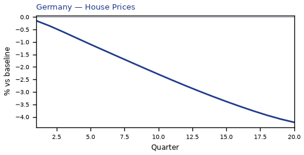
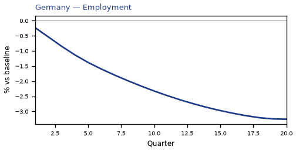
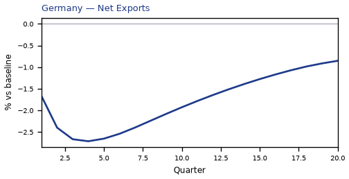
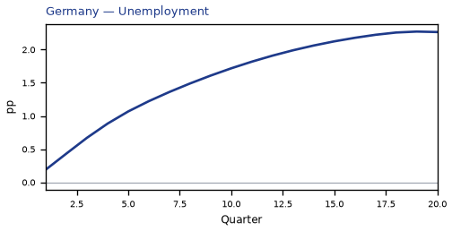
source=live · global_macro_v5 · contract v6 · Q1–Q20 JSON · not financial advice